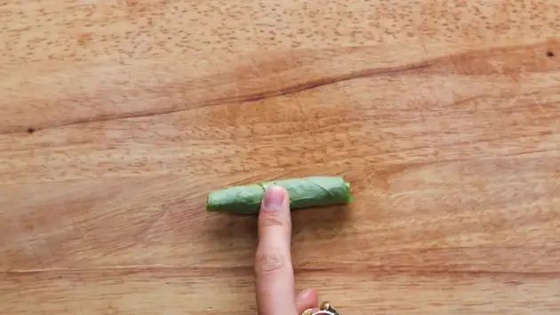
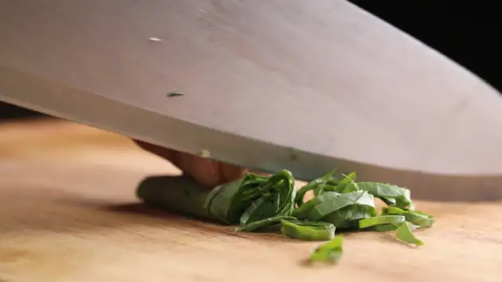
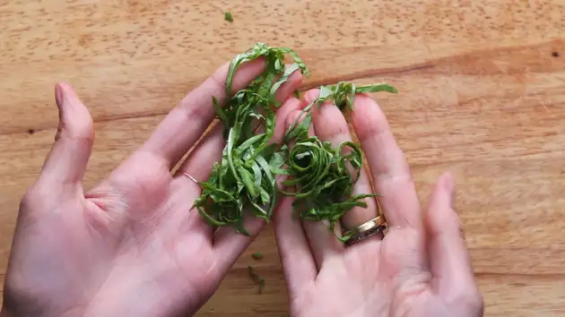

If you need to garnish a dish, you’ll probably use this cut. The most common
things you’ll chiffonade are herbs, like basil.
Start by stacking your basil leaves in a pile. Roll them up from the top, all the way down, until you have a
tight cigar shape

Make really thin slices all the way across

You’ll end up with beautiful ribbon-like shapes
